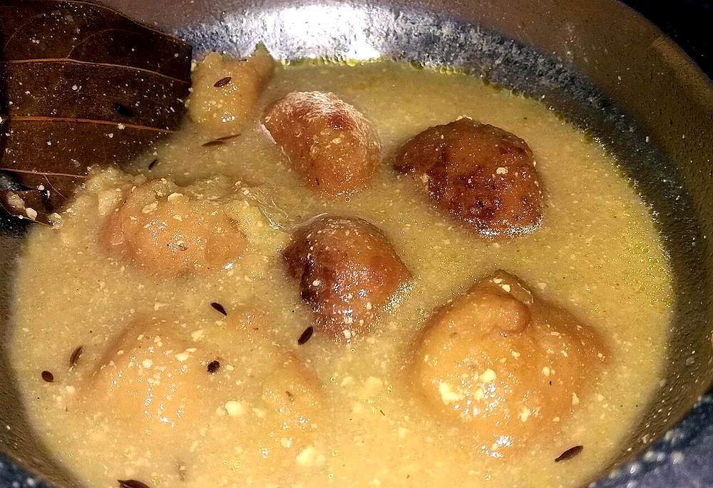

Kadhi Bari
fried gram-flour dumplings soaked soft in a tart yogurt gravy with a mustard-oil temper

Contains: milk, mustard
Checked against the ingredient list for ten allergens: milk, egg, fish, crustaceans, tree nuts, peanuts, sesame, mustard, soy and gluten. Brands vary, so read the label on anything new to you.
Ingredients
Quantities for 4.
- 200g in total Besan150g for the bari, 50g to thicken the kadhi
- 400g, sour Yogurtthe sourer the better; fresh sweet yogurt makes a flat kadhi
- 500ml, for deep-frying the bari Neutral Oil
- 3 tbsp, for the kadhi and the temper Mustard Oil
- 1 medium, finely chopped Onion
- 5 cloves, crushed Garlic
- 1 tsp, grated Ginger
- 3, slit Green Chilli
- 1 tsp Turmeric
- 3/4 tsp Chilli Powder
- 1.5 tsp Cumin Seeds
- 1/4 tsp Fenugreek Seeds
- 1/2 tsp Mustard Seeds
- 1/4 tsp Nigellaoptional
- 3 Dried Red Chilli
- 1/4 tsp Asafoetidause compounded-free hing to keep this gluten-free
- 1/4 tsp Baking Sodamakes lighter bari, but a well-beaten batter works without itoptional
- 3 tbsp, chopped Coriander Leavesoptional
- to taste Salt
- 1.2 litres Water
Cookware
kadhai, stovetop
Before you start
- Take the yogurt out of the fridge 30 minutes ahead. Cold yogurt hitting a hot pan splits instantly.
- Whisk the yogurt, the 50g besan and the water together completely smooth before any of it goes near heat. Lumps set hard and never disperse.
- Beat the bari batter for a good 5 minutes; a spoonful should float in a bowl of water when it is aerated enough.
Method
- Whisk 150g besan with 1/2 tsp salt, 1/4 tsp turmeric, the baking soda and about 120ml water into a thick batter, then beat hard for 5 minutes until it is pale and fluffy.Drop a little into water. If it floats, the batter is ready; if it sinks, keep beating.
- Heat the neutral oil to 170C and drop in walnut-sized spoonfuls of batter. Fry 4-5 minutes, turning, until deep golden and hollow-sounding.
- Drain the bari on paper, then soak them in warm water for 10 minutes and squeeze gently.This soak is what makes bari spongy rather than chewy. Do not skip it, and squeeze softly or they tear.
- Whisk the sour yogurt with the remaining 50g besan, the rest of the turmeric, the chilli powder and 1.2 litres water until absolutely smooth.
- Heat 2 tbsp mustard oil in a kadhai until it smokes, then lower the heat and crackle 1 tsp cumin seeds and the fenugreek seeds for 15 seconds.
- Add the chopped onion, garlic, ginger and green chillies and fry 6-8 minutes until the onion turns golden.
- Pour in the yogurt mixture and bring it to a boil over medium heat, stirring constantly in one direction.Stir without stopping until it boils. The moment you walk away is the moment it curdles.
- Once boiling, lower the heat and simmer uncovered 25 minutes, stirring every few minutes, until the kadhi coats a spoon and the raw besan smell is gone.
- Add salt and slip in the squeezed bari. Simmer another 8 minutes so they drink up the gravy.
- In a small pan heat the remaining 1 tbsp mustard oil, crackle the mustard seeds, remaining cumin, nigella, broken red chillies and asafoetida for 20 seconds, and pour it over the kadhi.Pour the temper over at the table so the aroma survives to the plate.
- Scatter with coriander leaves and serve with plain rice.
Storage
Keeps 3 days refrigerated and tastes better on day two. It thickens considerably. Reheat over low heat with 100ml water, stirring, and never boil it hard on reheating.
Nutrition Good estimate
Medium protein: 16 g a serving, 12% of the calories
| Per serving228 g | Per 100 g | |
|---|---|---|
| Calories | 534 kcal | 235 kcal |
| Protein | 16.1 g | 7 g |
| Carbohydrate | 40.1 g | 18 g |
| of which sugars | 11.7 g | 5 g |
| Fibre | 7.0 g | 3 g |
| Fat | 35.1 g | 15 g |
| of which saturated | 5.5 g | 2 g |
| of which unsaturated | 26.9 g | 12 g |
Nearest database match used for asafoetida. Estimated from raw ingredients using USDA FoodData Central.
Times, yields, allergens and nutrition are guidance. Use your own judgement on doneness and on storing. More in About.